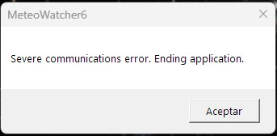
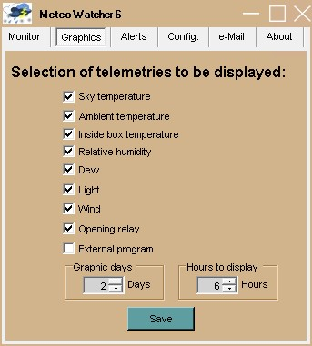
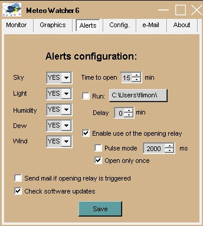

Meteo Watcher 6

|
Meteo Watcher 6 |
|
|
| Meteo
Watcher 6
es un monitor/analizador de condiciones meteorológicas esenciales para la
operativa de observatorios astronómicos. Ha sido diseñado para controlar la seguridad del observatorio, ya sea gestionado de manera presencial o remota. La implantación del Internet de las Cosas (IoT) está facilitando la utilización de nuevos sensores, más precisos, con mayores prestaciones, con menor consumo y mayor durabilidad. Esta nueva versión del Meteo Watcher hace uso de nuevos sensores, que le permiten mejorar la precisión y fiabilidad en algunos de los parámetros monitorizados. Parámetros meteorológicos relevantes desde el punto de vista de la seguridad en un observatorio astronómico: Nubosidad, Temperatura Ambiente, Humedad Relativa, Punto de Rocío, Luminosidad y Viento. En el Meteo Watcher 6 se ha prescindido del sensor de lluvia debido a la nula relevancia del mismo. Siempre, antes de llover y con toda seguridad, se habrá cerrado el observatorio debido a la presencia de nubes. Al igual que se ha preferido optar por un sensor de humedad con mayor resistencia a la intemperie, prescindiendo del sensor de presión atmosférica, que nada aportaba a la seguridad de un observatorio astronómico. La eliminación del sensor de lluvia y el calefactor ha permitido reducir drásticamente el consumo, facilitando que el dispositivo puede alimentarse directamente a través del puerto USB, sin necesidad de utilizar ninguna fuente de alimentación externa. Meteo Watcher 6 sigue siendo el único dispositivo de este tipo con capacidad para operar de manera autónoma, garantizando la seguridad del observatorio sin tener que depender de ningún ordenador, sistema empotrado o controlador adicional. Analiza los parámetros meteorológicos conforme a la configuración que se le haya establecido y decide, por sí sólo, si las condiciones son seguras como para que el observatorio pueda permanecer abierto. Todos los cambios descritos hacen que esta nueva versión sea mucho más simple de configurar, implicando una curva de aprendizaje en el uso del dispositivo mucho más breve.
Meteo Watcher 6 no debe asimilarse ni utilizarse como una estación meteorológica. No está pensado ni diseñado para esa labor.
|
| Versiones anteriores | ||||||
|
 |
 |
|||
 |
||||
|
En su diseño se ha buscado practicidad y operatividad, proporcionando información en tiempo real de manera gráfica o procesable con posterioridad mediante un fichero CSV. Dispone de una salida (par de hilos) que le permite actuar de manera autónoma sobre otros dispositivos y/o sensores, como puede ser el Talon6 o equivalentes. Las comunicaciones entre el Meteo Watcher y el ordenador del observatorio se realizan a través del Programa de Control mediante conexión USB 2.0 (se proporciona con cable de 5 mts). La alimentación se realiza a través de la propia conexión USB. Meteo Watcher puede funcionar y gestionar la seguridad del observatorio sin necesidad de un ordenador. Una vez configurado, éste trabaja de manera autónoma, analizando las medidas medioambientales y decidiendo si debe seguir o no abierto el observatorio en base a la configuración establecida. Desde el momento que se enciende comienza a analizar parámetros y tomar decisiones. El Programa de Control permite al usuario monitorizar en tiempo real los valores meteorológicos y configurar el comportamiento del dispositivo. La telemetría proporcionada en la ventana principal del Programa de Control y en el Registro de Intercambio de Información con otros programas se actualiza cada 30 segundos. Meteo Watcher, es un dispositivo de medición de parámetros medioambientales, que lejos de ser absolutos, son dependientes del lugar de instalación y época del año en la que nos encontremos, por lo que será necesario realizar ajustes en los parámetros de configuración para adecuarlo a las condiciones climatológicas de cada época. En todo caso, Meteo Watcher no es una estación meteorológica y no debe utilizarse como tal. Meteo Watcher 6 dispone de un sensor de humedad y temperatura ambiente, que le permite conocer la temperatura de rocío (punto de rocío). Esto permite configurar las alertas para que se cierre el observatorio en caso de alcanzar una humedad relativa límite o que la temperatura de rocío se acerque demasiado a la temperatura ambiente. En ocasiones se cuida mucho el rocío en las lentes, pero se olvida que puede ser también muy perjudicial para la electrónica que rodea al telescopio (montura, ordenadores, cámaras, enfocadores, etc). E incluso, que debido al hielo sea imposible cerrar el observatorio. En el Meteo Watcher 6 se ha optado por sustituir el clásico relé de señal de apertura/cierre del observatorio por un dispositivo de estado sólido, más duradero y que proporciona un significativo menor consumo. En cualquier caso, no debe utilizarse como interruptor para el manejo de motores u otro tipo de dispositivos. El Programa de Control está compilado en .NET 4.7.2, por lo que es compatible con Windows 8.1, 10 y 11. Al mismo tiempo, ha sido programado para que la interpretación del separador de decimales, ya sea coma o punto, no sea un problema y se adapte a la configuración regional del sistema donde se ejecuta. El interfaz USB 2.0 utiliza el chipset CH341. Las últimas versiones de Windows lo reconocen sin problema, pero si lo necesita, aquí tiene el driver para descargarlo e instalarlo. Es posible actualizar el firmware del procesador que incorpora desde el propio ordenador donde se ejecuta el Programa de Control. Para ello se utilizará el programa XLoader. Basta con descomprimir y ejecutar:
Será necesario indicar que se trata de un Arduino Nano(ATmega328) (como se muestra en la imagen) y seleccionar el puerto que le ha asignado Windows. La velocidad de comunicación la fija el programa. Se seleccionará el fichero con la última versión del firmware que se desee instalar y se pulsará Upload. Mientras se realiza la reprogramación no se deben interrumpir las comunicaciones ni apagar el Meteo Watcher. Es posible que el proceso de actualización implique un borrado de la configuración existente, por lo que es recomendable verificar la configuración tras aplicar una actualización del firmware. |
| Meteo Watcher
incorpora un anemómetro bastante sensible que funciona en base a pulsos (relé
reed).
Es un modelo que durante años ha demostrado una gran fiabilidad y que es utilizado en numerosas estaciones meteorológicas. El anemómetro se conecta al Meteo Watcher a través de un conector estanco, como puede verse en la foto. |
| Soporte ASCOM para Meteo Watcher 6
|
|
Meteo Watcher proporciona un medio de interconexión con otros programas a través del fichero MeteoWatcher6.dat, compatible con el modo Boltwood/Clarity II Remote, que le permite interactuar con la mayoría del software destinado a la automatización de observatorios, como pueden ser CCD Commander o CCD Auto Pilot, al ser compatible con ASCOM Boltwood Safety Monitor. De igual manera es compatible con ASCOM Generic File SafetyMonitor Driver mediante la creación del fichero MeteoWatcher6.safe en la carpeta MeteoWatcher6 dentro de Documentos del usuario de Windows. De tal manera que si las condiciones son seguras para abrir el observatorio se crea dicho fichero. Eliminándose en el momento que dejan de serlo. Meteo Watcher 6 también dispone de un driver ASCOM propio, el Meteo Watcher SafetyMonitor, aunque en este caso se accede al Meteo Watcher por Ethernet mediante protocolo HTTP. Este driver permite conocer si las condiciones climatológicas son seguras para abrir el observatorio, conforme a los parámetros que se hayan configurado desde el Programa de Control. Para ello es necesario activar el Acceso Remoto y configurar el driver para que acceda al ordenador y puerto donde se esté ejecutando. Esta solución permite que varios observatorios puedan instalar el driver ASCOM y utilizar un único Meteo Watcher 6. Este driver ha pasado las pruebas de validación de ASCOM. |
| Accediendo a Meteo Watcher 6
desde N.I.N.A.
|
|
En NINA se puede configurar Meteo Watcher 6 como un Monitor de Seguridad utilizando el driver ASCOM, lo que permitirá conocer desde NINA si las condiciones meteorológicas son seguras para abrir el observatorio.
También, de manera simultánea, podemos configurar NINA para que acceda a los datos meteorológicos que maneja el Meteo Watcher 6 a través del fichero de datos MeteoWatcher6.dat, viéndolo como un Boltwood/Clarity II Remote:
De esta manera podremos disponer en la consola de NINA los siguientes paneles:
|
| Medidas de seguridad
que proporciona Meteo Watcher 6
|
Dado que el dispositivo opera de manera autónoma, sin necesidad de estar conectado a ningún ordenador, no necesita medidas de verificación de presencia de segundos dispositivos. Si se desea garantizar la alimentación por el puerto USB de manera independiente al ordenador, deberemos conectarlo a un Hub USB autoalimentado. Desde el momento que se proporcione alimentación al Meteo Watcher 6 y si está configurado en Modo Automático, comenzará a realizar las medidas de los parámetros meteorológicos y a adoptar decisiones sobre la seguridad de nuestro observatorio. |
| Instalación y
mantenimiento del Meteo Watcher 6
|
Descargue y descomprima el fichero que contiene la última versión del Programa de Control (ver sección Actualización de software y firmware de esta página). Cree la carpeta donde quiera instalar el programa. Lo aconsejable es que dicha carpeta se denomine MeteoWatcher6 y se cree en la carpeta del sistema Archivos de programa. En la carpeta Documentos del usuario se creará automáticamente la carpeta MeteoWatcher6, donde residirán todos los ficheros relacionados con la aplicación: configuración, logs, etc. La primera vez que ejecute el Programa de Control (MeteoWatcher6.exe) se creará automáticamente el fichero MeteoWatcher6.ini con una configuración estándar que posteriormente podrá modificar con el propio programa desde las pestañas Alertas y Configuración. Sólo se le pedirá indique el puerto serie con el que se conectará. El dispositivo Meteo Watcher deberá instalarse en una ubicación despejada del observatorio, siendo muy importante que tenga una ligera inclinación para evitar retenga agua en la parte superior del mismo, debiendo estar situados los orificios de ventilación, que nunca deberán obstruirse, en la parte más baja, conforme se puede apreciar en la siguiente foto:
En algunos ordenadores, a pesar de que el fabricante asegure que sus puertos USB cumplen las especificaciones 2.0, no siempre es cierto y proporcionan voltajes en la salida de 5V sensiblemente inferiores, lo que en la práctica supone un recorte en la longitud máxima del cable USB que pueden soportar y por tanto tienen dificultades para utilizar cables USB de 5 metros, como el que incorpora el Meteo Watcher. Esta circunstancia suele traducirse en pérdidas intermitentes de las comunicaciones o directamente no poder establecerse. En ocasiones es posible solventar este problema probando en alguno de los otros puertos (preferiblemente los situados en la parte trasera del ordenador). Aunque la solución más recomendable es incorporar un HUB USB alimentado, de calidad y que nos garantice cumplir con las especificaciones USB 2.0. También es posible utilizar Extensores de USB mediante RJ45 a través de cable UTP. Meteo Watcher, como todo dispositivo instalado en el exterior, sufre las inclemencias meteorológicas y ambientales, por lo que deberá ser objeto de cuidado y mantenimiento. El sensor de nubes pueden presentar acumulación de suciedad, por lo que es aconsejable limpiarlo, con mucho cuidado y suavemente, con agua jabonosa y un bastoncillo. La falta de limpieza puede producir lecturas erróneas en este sensor. |
| Información
proporcionada por el programa
de control del Meteo Watcher 6
|
| Cuando se inicializa el
programa, se muestra la ventana principal.
Tenga en cuanta que los datos de telemetría y configuración residen en el dispositivo Meteo Watcher, por lo que cada vez que se solicitan telemetrías o parámetros de configuración, el programa debe solicitar éstos al Meteo Watcher para poder visualizarlos. Esta operación, dependiendo de las circunstancias puede llegar a tardar algunos segundos. Si todo es correcto y una vez se ha establecido la comunicación con el Meteo Watcher se visualizarán los datos de telemetría. En el caso de que se haya establecido la ejecución en modo minimizado, el Programa de Control se minimiza y aparecerá en el System Tray el icono de Meteo Watcher 6 con la marca verde y una notificación como la siguiente:
En cualquier momento, realizando un doble click con el botón izquierdo del ratón sobre el icono, la aplicación volverá a ejecutar en modo normal y se podrán ver los valores de todos los sensores y condiciones meteorológicas que el Meteo Watcher monitoriza. En el caso de que el Programa de Control detecte problemas en las comunicaciones, aparecerá un mensaje similar al anterior indicando Restarting Communication, poniéndose el icono de la barra de tareas (System Tray) con la marca roja.
Si finalmente no es posible reestablecer la comunicación se obtendrá el siguiente mensaje y se cerrará el Programa de Control:  Volviendo a la ventana en tamaño normal, en la zona superior izquierda se muestra la fecha y hora en la que se realizó la última actualización de datos. En la zona superior izquierda se muestra el estado de Opening relay, con el que se indica si las condiciones ambientales son adecuadas para operar el observatorio (botón en color verde) y por tanto el relé estará inactivo, o si por el contrario no se cumplen las condiciones para operar de manera segura (botón en color rojo) y el relé en este caso estará activo. En el caso de haberse inhibido el relé, el botón aparecerá en color gris. Además del relé, siempre que tengamos ejecutando el programa de control, es posible configurar Meteo Watcher para que ejecute un External Program (*.bat, *.exe o *.vbs) en el caso de que las condiciones ambientales no sea adecuadas. Al igual que con el Opening relay, el botón estará en verde si las condiciones son adecuadas y el programa no se ha ejecutado o se ha cumplido el periodo de tiempo de Time to open , en rojo en caso de incidencia y por tanto haberse ejecutado el programa, o en gris en caso de no estar activa dicha opción en la pestaña de Alerts. En caso de alerta, primero se ejecutará el programa externo, y una vez finalizado, se activará el relé de cierre. Esto permite, por ejemplo, ejecutar un script VBS (POTH_Park_Telescope.vbs) que se conecta con el telescopio a través de POTH o ASCOM Device Hub para dar la orden de aparcar el telescopio, y posteriormente mediante el relé, iniciar el cierre del observatorio. En el campo Time to open se indican los minutos restantes para que todos los mecanismos de seguridad activados indiquen que es posible abrir el observatorio: relé, campos de Cierre del observatorio o Alerta del fichero MeteoWatcher6.dat. Esta cuenta atrás se inicia en el momento en el que se desactivan todas las alarmas. El botón Reset permite indicar a Meteo Watcher que en el próximo ciclo, si las condiciones lo permiten, ponga a cero el contador de Time to open. Cuando se pulsa el botón se pone en color rojo. Una vez se ha evaluado la petición, éste vuelve a ponerse en verde. Es de utilidad si estando inhibida la apertura del observatorio (Opening relay en rojo) modificamos algún valor en la configuración o en las alertas. El botón Automatic, cuando esté en verde indica que se ha permitido al dispositivo tomar decisiones de manera autónoma. Si se encuentra en rojo el Meteo Watcher 6 se limita a proporcionar telemetrías, permaneciendo siempre el relé cerrado, forzando por tanto el cierre del observatorio. En la zona derecha, que corresponde a los valores proporcionados por alguno de los sensores, tenemos: Temp.: Temperatura ambiente. Sky: Temperatura del Cielo medida por el sensor de nubes. Cuanto más despejado esté el cielo menor será la temperatura medida. Usaremos este valor para ajustes de configuración. Light: Representa una indicación de la luminosidad que está midiendo el sensor de luz. Humidity: Humedad relativa. Dew: Temperatura a partir de la cual empieza a condensarse el vapor de agua contenido en el aire. Wind: Velocidad del viento. Se realiza una lectura cada 30" y se muestra el valor medio de las tres últimas mediciones.
En la zona inferior izquierda tenemos el botón Graphics, que nos permitirá visualizar con total comodidad la evolución de todos las variables monitorizadas por el Meteo Watcher a lo largo de hasta los últimos 30 días. Al pulsarlo se abrirá una nueva ventana como ésta:
En el caso de que la ventana permanezca abierta, ésta se actualizará automáticamente cada 5 minutos. Si se pulsa el botón Gráfica estando la ventana abierta se producirá un refresco de las gráficas a ese instante. Cuando se abre la ventana de gráficos, o cuando ésta se regenera automáticamente cada cinco minutos, se crea/actualiza automáticamente el fichero MeteoWatcher6.jpg con una copia de dicha gráfica. Lo que nos permitirá empotrarla en una página Web o en otro tipo de visualizador. Los valores de Humidity, Light y External P. se visualizan en la escala el eje de ordenadas (Y) de la izquierda. Los valores de Sky T., Ambient T., Box T., Dew y Wind utilizan el eje de ordenadas (Y) de la derecha. Cuando el Opening relay está armado, indicando que no debe abrirse el observatorio, la gráfica sale en fondo rojo pálido, cubriendo la franja de 0 a 100 de la escala Y de la izquierda. En caso contrario el fondo sale de color blanco. Los datos visualizados son los mismos que se almacenan en formato CSV, por lo que para estudios más profundos y detallados recomiendo utilizar directamente una hoja de cálculo. |
| Gráficas del Meteo
Watcher 6  Como se ha indicado previamente, Meteo Watcher 6 puede mostrar de modo gráfico todos los parámetros que monitoriza. En la ventana Graphics podemos seleccionar qué parámetros queremos que se muestren gráficamente, así como cuántos días debe poder llegar a cubrir la gráfica y cuántas horas de monitorización deben mostrarse en la gráfica. |
| Alertas
de
Meteo Watcher 6 
|
|||||||||||||||||||||||||||||||||||||||||||||
| Recuerde que los parámetros
de configuración se almacenan en el Meteo Watcher 6, por lo que cada
vez que se solicitan parámetros de configuración, el programa debe solicitar
éstos al Meteo Watcher 6 para poder visualizarlos. Esta operación,
dependiendo de las circunstancias puede llegar a tardar unos pocos segundos. En la ventana de Alerts se definirá qué parámetros queremos controlar para operar con el observatorio. Sky
Light
Humidity
Dew
Wind
Time to open
Run external program
Enable use of the opening relay
Send mail if opening relay is triggered
Check software update
Una vez ajustados los parámetros de alerta debe pulsar el botón Save para que se almacene en el propio Meteo Watcher 6 la configuración establecida. |
| Configuración
de
Meteo Watcher 6
|
|||||||||||||||||||||
| Recuerde que la
configuración se almacena en el dispositivo Meteo Watcher, por lo que cada
vez que se solicitan los parámetros de configuración desde el programa de
control, éstos se debe solicitar
al dispositivo para poder visualizarlos. Esta operación,
dependiendo de las circunstancias puede llegar a tardar hasta seis segundos. En la ventana de Configuration es donde se definen los valores de los parámetros que fijarán el funcionamiento del Meteo Watcher. COM: Indicaremos en este campo el puerto serie asignado para las comunicaciones con él. Humidity: Indicaremos el umbral de humedad relativa máximo a partir del cual se entiende hay demasiada humedad ambiente y es perjudicial para el equipo o perjudica notablemente las observaciones. Si se sobrepasa este umbral se indicará en los campos W y r del fichero MeteoWatcher6.dat (que se describe posteriormente) como humedad alta. Diferential Dew: Fijaremos el diferencial mínimo admisible en grados centígrados entre la temperatura ambiente y el punto de rocío. Por debajo de ese diferencial se entiende que hay excesivo peligro de condensación. Si se sobrepasa este umbral se indicará en los campos W y r del fichero MeteoWatcher6.dat (que se describe posteriormente) como humedad alta. Wind: Valor a partir del cual se entiende que pasa de calma a viento fuerte, que impide mantener abierto el observatorio. Brightness: El valor de este parámetro pueden variar entre 0 (totalmente oscuro) y 1023 (máxima luminosidad) y representa en valor por debajo del cual se entiende que se ha alcanzado un nivel razonable de oscuridad. Cloudy: Los valores de temperatura del cielo pueden variar desde valores positivos en caso de mucha nubosidad a valores negativos en caso de cielos despejados. Cuanto más despejado más negativa será la temperatura del cielo. Este valor determina el límite de temperatura del cielo a partir del cual, en sentido descendente de valor, se entiende que el cielo pasa a estar nublado. Photometer calibration: Este parámetro permite calibrar la sensibilidad del medidor de luz, posibilitando que tengamos mediciones de cero en condiciones de oscuridad. Es un valor que se restará siempre a la lectura que proporcione el detector de luminosidad. Anemometer calibration: Para realizar una razonable caracterización del anemómetro necesitamos conocer y especificar estos parámetros.
Remote access: Meteo Watcher proporciona la facilidad de poder activar, a través del programa de control, un servidor HTTP que proporciona un string en formato estándar Json que incluye todos los datos de la telemetría. Para ello sólo se debe activar esta funcionalidad e indicar el puerto por donde se ofrecerá este servicio. En el caso de estar tras un router NAT será necesario configurar la correspondiente redirección de puertos. Al utilizarse un formato estándar, el acceso a este servicio se puede realizar a través de cualquier navegador. En el caso de Firefox, dispone de un visualizador de Json, por lo que la presentación será más agradable a la vista.
También está disponible un cliente propietario (MeteoWatcher6-Client.exe) que facilita una visión de los parámetros que se está proporcionando desde el servidor Json. Se proporciona un enlace para su descarga en la zona de Actualización de software y firmware.
Pero si lo que prefiere es poder acceder a través de Apps de dispositivos móviles, encontrará diversos visores en los repositorios de aplicaciones. Si lo que busca es disponer de un Panel de Control (Dashboard) le recomiendo Dashboard (of JSON Requests), disponible tanto para iOS como para Android. Con esta App podrá configurar sus consultas y disponer de un interfaz como éste:
En el bloque de opciones tenemos aquellas que permiten definir el modo de funcionamiento del Programa de Control: Start with Windows: Se indica al programa de control del Meteo Watcher 6 que debe realizar la configuración necesaria en el sistema para que éste se arranque automáticamente al iniciar el sistema operativo. Run minimized: Se indica al programa de control del Meteo Watcher 6 que debe ejecutar en modo minimizado, mostrando únicamente el icono en la barra de tareas (System Tray). De esta manera, una vez establecida la conexión con el dispositivo, el programa pasa automáticamente a ejecutar en modo minimizado. Generates trace: Se indica al programa de control del Meteo Watcher 6 que genere el fichero MeteoWatcherV.log, en el mismo directorio donde se encuentre instalado, en el que irá almacenando toda la información relativa a las operaciones que va realizando. Normalmente estará desactivado.
Una vez ajustados los parámetros de configuración debe pulsar el botón Save para que se almacene en el Meteo Watcher 6 la configuración establecida. En el caso de pulsar Reset se cargará la configuración por defecto. Realice las modificaciones que considere y finalmente pulse Save para que ésta se almacene en el Meteo Watcher. |
| Configuración
de
eMail
|
|
En la ventana de Alertas es posible configurar el Programa de Control del Meteo Watcher para que envíe un mail cada vez que se active el relé de cierre del observatorio. Una vez configurados los parámetros de configuración de nuestro servidor de correo electrónico, deberemos pulsar el botón Save para almacenar nuestra configuración. Pulsando el botón Test podremos verificar que todo está bien configurado, debiéndonos llegar un mail de prueba. Si es usuario de GMail y si, habiendo verificado todos los parámetros de identificación, al enviar el mail de prueba obtiene el siguiente mensaje de error:
se debe a restricciones de seguridad de Google para permitir el acceso de aplicaciones de terceros a su correo electrónico. Para permitir que el Programa de Control pueda enviar los mensajes de alertas deberá utilizar una Contraseña de Aplicación. En este enlace encontrará la página de ayuda de Google. |
| Acerca de Meteo
Watcher 6
|
|
En esta ventana podremos consultar, además de las condiciones de uso, la versión del Programa de Control que estamos utilizando, la versión del hardware (PCB) y del software del dispositivo Meteo Watcher 6 (firmware). |
| Especificación del
fichero MeteoWatcher6.dat
|
||||||||||||||||||||||||||||||||||||||||||||||||||||||||||||||||||
| Es el fichero de intercambio
de información con otros programas. Se sigue el formato definido por Cyanogen para el Cloud Sensor II en claritymanual.pdf (Cap. 17). Siendo el punto el separador de decimales, independientemente de la configuración regional. 2023-02-11 09:22:48.00 C K -3.1 0.3 -2.5 4.2 81 -2.6 0 0 0 00030 044968.39083 3 1 0 3 1 1
|
| Especificación del
fichero MeteoWatcher6.csv
|
||||||||||||||||||||||||
| Es un fichero en formato CSV
e importable directamente desde Excel. La descripción de los campos,
separados por ";", es la siguiente: 2023-02-11;09:22:48;-3.08;0.26;-2.49;80.9;-2.62;996;4.2;1;0
|
| Actualización
de software y firmware
|
|
| Programa de Control | 6.0.6 - MeteoWatcher6-v6.0.6.zip [Se requiere Firmware 6.0.5 HW R9] |
| Remote Client | 6.0.4 - MeteoWatcher6-Client-v6.0.4.zip [Se requiere Programa de Control 6.0.6 o superior] |
| Firmware | 6.0.5 - FW-MW6-v6.0.5-HWR9.zip [Indispensable para Programa de Control 6.0.6 o superior] |
| Contacto
|
Meteo Watcher 6 no es un producto comercial y por lo tanto se proporciona sin ningún tipo de garantía. No va sellado ni incorpora mecanismos que impidan al propietario su manipulación. Lo diseñé para utilizarlo, y lo utilizo, en mi observatorio. Sólo el desarrollo software ha supuesto cientos de horas de trabajo. Sigo trabajando en su evolución, siendo ésta la sexta generación. Si necesitas alguna aclaración, sugerencia o si tienes interés por un Meteo Watcher 6, puedes contactar conmigo en: o puedes inscribirte en el grupo de Google meteowatcher : https://groups.google.com/forum/#!forum/meteowatcher
|